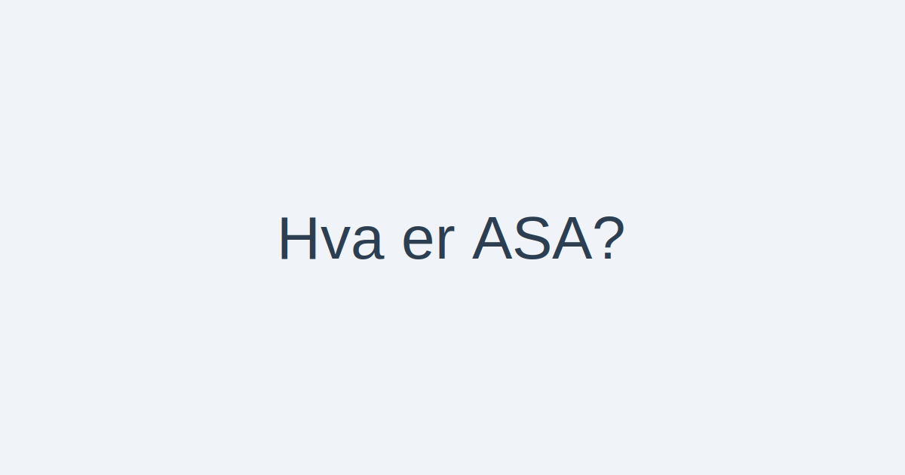

For en oversikt over ulike selskapsformer i Norge, se Selskapsform.
En allmennaksjeselskap (ASA) er en selskapsform regulert av Aksjeloven med egne regler tilpasset allmenn aksjeinnhenting. Formen er designet for store virksomheter som ønsker tilgang til offentlig kapital, børsnotering og styrket likviditet. For en oversikt over aksjeselskap generelt, se Hva er et Aksjeselskap?.

Definisjon og Juridisk Rammeverk
Allmennaksjeselskap (ASA) er regulert av Aksjeloven, med egne krav til kapital, styring og rapportering. De sentrale kravene er:
- Offentlig Kapitalinnhenting: Mulighet til å notere aksjer på børs og tilby aksjer til allmennheten.
- Minimum Aksjekapital: 1 000 000 kroner.
- Styresammensetning: Minst tre styremedlemmer.
- Generalforsamling: Strengere krav til deltakelse og annonsering.
- Revisor: Obligatorisk revisjon av årsregnskapet.
Historikk og Bakgrunn
Allmennaksjeselskap (ASA) ble innført i Norge i 1997 som en utvidelse av Aksjeloven for å tilpasse selskapsformen til behovet for offentlig kapitalinnhenting og børsnotering. Hensikten var å skille tydelig mellom private og allmenne aksjeforetak, og sikre høyere krav til eier‑spredning og transparens.
Stiftelse og Registrering
For å etablere et ASA må følgende trinn følges:
- Stifter(e): Minimum én stifter (person eller selskap) som tegner aksjer ved opprettelse.
- Vedtekter: Selskapet må ha vedtekter som angir formål, aksjekapital og virksomhet.
- Registrering: Innlevering av stiftelsesdokument, vedtekter og bekreftelse på aksjeinnbetaling til Foretaksregisteret.
- Aksjekapital: Minimum aksjekapital på 1 000 000 kroner.
- Aksjeklasser: Aksjene må være fritt omsettelige, og selskapet kan opprette ulike aksjeklasser med forskjellige rettigheter.
Krav til Aksjekapital, Styre, Generalforsamling og Revisjon
| Kravstype | Krav | Formål |
|---|---|---|
| Minimum aksjekapital | 1 000 000 kr | Sikre en solid kapitalbase |
| Styre | Minst 3 medlemmer | Økt kontroll og tilsyn |
| Generalforsamling | Offentlig innkalling og referat | Beskytte aksjonærers interesser |
| Revisjon | Obligatorisk | Økt troverdighet og transparens |
| Børsnotering | Tillatt | Kapitalinnhenting fra allmennheten |
Organisering og Ledelse
ASA har en struktur som sikrer god styring og ledelse gjennom følgende organer:
Styret
- Minst tre styremedlemmer valgt av generalforsamlingen.
- Ansvar for overordnet strategi, risikostyring og kontroll.
- Rapporterer til generalforsamlingen og kan ansette daglig leder.
Daglig Leder
- Valgfritt organ, men vanlig i større ASA.
- Ansvar for den daglige driften og rapportering til styret.
Generalforsamling
- Øverste organ der aksjonærene utøver sine rettigheter.
- Beslutninger om årsregnskap, styrevalg, utbytte og vedtektsendringer.
Aksjonæravtaler
Aksjonærer kan inngå aksjonæravtaler for å regulere rettigheter, plikter og overføring av aksjer.
Børsnotering og Kapitalinnhenting
Gjennom børsnotering kan et ASA hente kapital direkte fra investeringsmarkedet. Dette gir:
- Økt synlighet og omdømme hos investorer.
- Likviditet i aksjene gjennom omsetning på børs.
- Mulighet for emisjoner og egenkapitalutvidelse.
Emisjonstyper
For å hente inn kapital kan et ASA benytte ulike emisjonstyper:
| Emisjonstype | Beskrivelse |
|---|---|
| Offentlig emisjon | Tilbud til allmennheten via børs |
| Rettet emisjon | Plassering til utvalgte investorer eller grupper |
| Gratisemisjon | Tildeling av nye aksjer til eksisterende aksjonærer |
| Fusjonsemisjon | Emisjon ved fusjon med annet selskap |
Regnskap og Revisjon
Et ASA er regnskapspliktig etter Regnskapsloven, og underlagt obligatorisk revisjon for å sikre troverdighet og transparens i årsregnskapet.
Skatt og Utbytte
Beskatning av utbytte i ASA følger aksjonærmodellen som kombinerer skjermingsfradrag og alminnelig inntektsskatt på utbytte. I tillegg gjelder fritaksmetoden for konsernutbytte, som gir skattefritak mellom selskaper.
Fordeler og Ulemper
| Fordeler | Ulemper |
|---|---|
| Tilgang til bred kapitalbase | Strengere rapporteringskrav |
| Økt omdømme og synlighet | Høyere kostnader til revisjon og juridisk bistand |
| Likviditet for aksjonærer | Krav om styresammensetning og generalforsamling |
| Beskyttelse av eiere gjennom begrenset ansvar | Økt offentlighet og innsyn |
Sammenligning med AS
| Egenskap | ASA | AS |
|---|---|---|
| Minimum aksjekapital | 1 000 000 kr | 30 000 kr |
| Styresammensetning | Minst 3 styremedlemmer | Minst 1 styremedlem |
| Børsnotering | Tillatt | Ikke tillatt uten ekstra prosesser |
| Kapitalinnhenting | Offentlig emisjon mot allmennheten | Ofte rettet eller privat emisjon |
| Rapportering og revisjon | Obligatorisk revisjon og strengere rapportkrav | Revisjonsplikt avhengig av størrelse |
| Eieransvar | Begrenset til innskutt aksjekapital | Begrenset til innskutt aksjekapital |
For en detaljert gjennomgang av aksjeselskap (AS), se Hva er et Aksjeselskap?.
Oppsummering
Allmennaksjeselskap (ASA) er en avansert selskapsform for store virksomheter som ønsker tilgang til offentlig kapital, børsnotering og langsiktig vekst. Med høyere krav til kapital, styring, rapportering og revisjon gir ASA et robust rammeverk for å tiltrekke investorer, samtidig som det sikrer høy transparens og tillit i markedet.